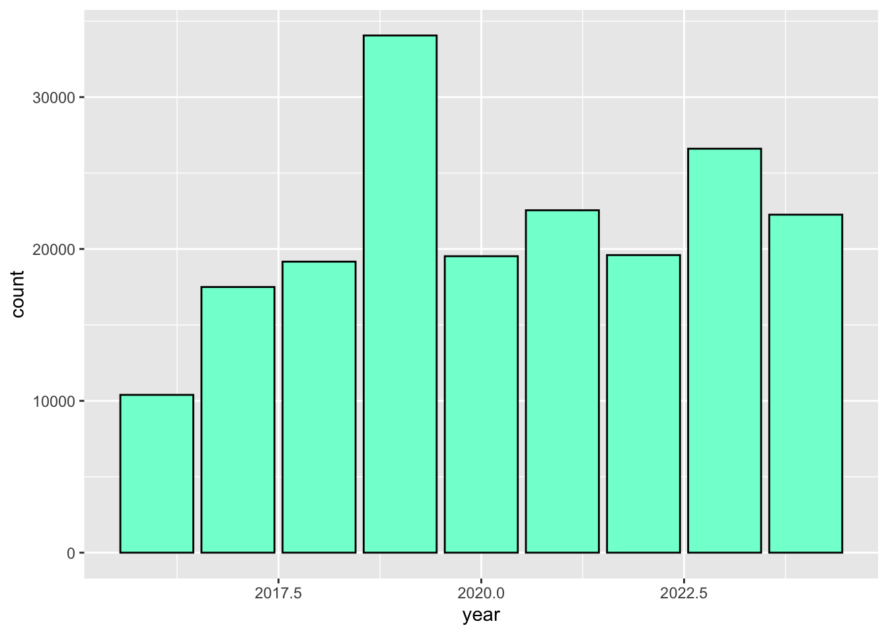
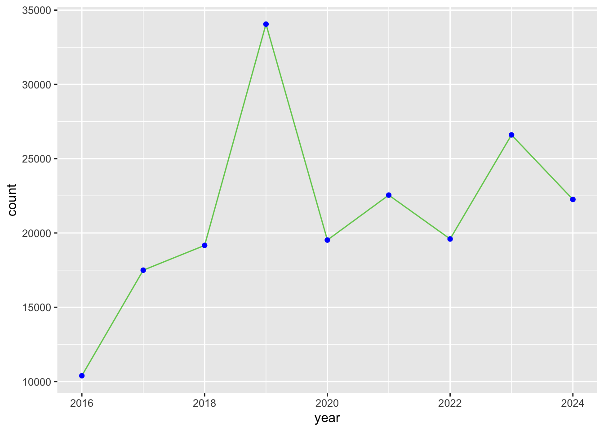
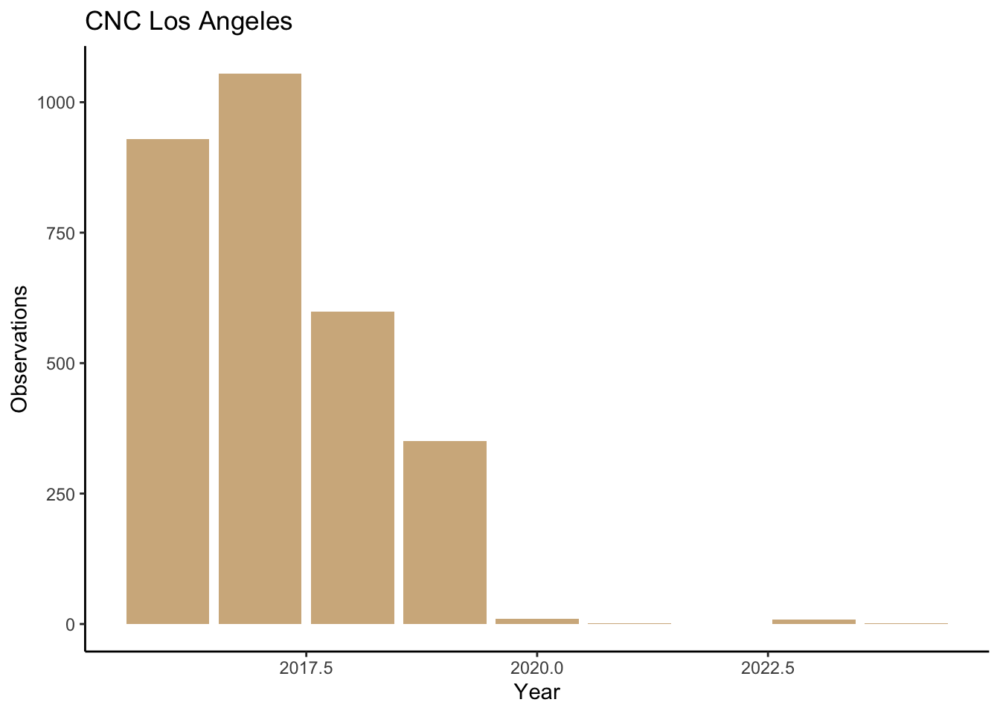

library(readr) # read and write tabular data
library(dplyr) # manipulate data
library(ggplot2) # create data visualizations
library(lubridate) # manipulate dates
library(here) # file pathsCreating charts
Questions
- How do we create charts using R?
Objectives
- Create bar and line charts using ggplot2.
- Customize the appearance of the charts.
- Save charts as image files.
Creating charts
ggplot2 is a package that allows you to create complex plots from tabular data. In the previous lesson we used it for maps, in this lesson we will use it for charts.
Note
Some people involved with visualizing data say charts, graphs, and plots are different things. This workshop will use charts, graphs, and plots interchangeably.
Main steps:
- Load iNaturalist data
- Use
filter(),select(),mutate(), andcount()to get the rows and columns we want - Pass the data to
ggplot2(). Set which columns in a data frame will be used for chart elements such as x and y axis - Create chart
iNaturalist data
First, read data from the iNaturalist observation file.
inat_data <- read_csv(here('data/cleaned/cnc-los-angeles-observations.csv'))Let’s add a year column to iNaturalist data.
inat_year <- inat_data %>%
mutate(year = year(observed_on)) Bar chart
Let’s create a bar chart that shows the number of observations per year.
First, pass the data frame inat_year to ggplot() function as the first argument.
ggplot(data = inat_year)
We need to tell ggplot how to use the data to create a chart. We can specify the mapping of data frame fields to elements in the chart, such as x/y coordinates, size, or shape, by using the aes() function. aes is short for aesthetic mappings.
For bar charts, we need to tell what field to use for the x axis. We want to create a plot with year on the x axis so we set the aes() function x argument to year. ggplot will count the number of rows for each year, and use the number of rows for the y axis.
ggplot(data = inat_year, mapping = aes(x = year))Next we need to specify how we want the data to be displayed. We do this using geom_ functions, which specify the type of geometry we want, such as points, lines, or bars. We use geom_bar() to create a vertical bar plot.
We can add a geom_bar() layer to our plot by using the + sign. We indent onto a new line to make it easier to read, and we have to end the first line with the + sign.
ggplot(data = inat_year, mapping = aes(x = year)) +
geom_bar() 
If we want horizontal bar chart, set the aes() function y argument to year.
ggplot(data = inat_year, mapping = aes(y = year)) +
geom_bar()Line chart
Let’s create a line chart that shows the number of observations per year.
For line charts, we need to specify which columns to use for the x and y axis.
We need to create a data frame that has a year column, and a column that counts the observations per year. Use mutate() and year() to add year column. Use count() to add column that has the count per year.
inat_year_count <- inat_data %>%
mutate(year = year(observed_on)) %>%
count(year, name='count')
inat_year_count# A tibble: 9 × 2
year count
<dbl> <int>
1 2016 10392
2 2017 17495
3 2018 19164
4 2019 34057
5 2020 19524
6 2021 22549
7 2022 19597
8 2023 26602
9 2024 22258For aes, use year on the x axis and count on the y axis. Use geom_line() to create a line chart.
ggplot(data = inat_year_count,
mapping = aes(x = year, y=count)) +
geom_line() To mark each value on the line chart, we can use geom_point() to add points to the chart.
ggplot(data = inat_year_count,
mapping = aes(x = year, y=count)) +
geom_line() +
geom_point()More bar charts
In the previous example we created a data frame inat_year_count that has observations per year. To create bar chart when the data has values for x axis and y axis, use geom_col()
We want year on the x axis, and count on the y axis.
ggplot(data = inat_year_count,
mapping = aes(x = year, y = count)) +
geom_col()
Stacked bar charts
In the map lesson we created maps with markers that had different colors based on data in the data frame. We can do something similar with bar charts. We can create stacked bar charts by adding a column from the data frame to aes() function fill argument.
Let’s create a stacked bar chart using quality_grade.
ggplot(data = inat_year,
mapping = aes(x = year, fill = quality_grade)) +
geom_bar() The height of each bar represents the number of observations per year. The height of the 3 rectangles in each bar represents the number of observations that are labeled casual, needs_id, and research.
ggplot2 assigns each quality grade a different color, and creates a legend that tells you which values goes with which color.
Exercise 1
Create a chart with all your observations for each year
- Use
read_csv()to read iNaturalist file. - Use
mutate()andyear()to add year column - Use
filter()to select observations you made. Use ‘quantron’ as the user if you don’t have CNC observations. - Save the data frame to
my_obs_by_yearobject - Use
ggplot()to set the data and aesthetics. - Choose which type of chart you want: bar or line.
my_inat_data <- read_csv(here('data/cleaned/cnc-los-angeles-observations.csv'))Rows: 191638 Columns: 37
── Column specification ────────────────────────────────────────────────────────
Delimiter: ","
chr (26): time_observed_at, user_login, user_name, created_at, updated_at, ...
dbl (7): id, user_id, latitude, longitude, positional_accuracy, public_pos...
lgl (3): captive_cultivated, coordinates_obscured, threatened
date (1): observed_on
ℹ Use `spec()` to retrieve the full column specification for this data.
ℹ Specify the column types or set `show_col_types = FALSE` to quiet this message.my_obs_by_year <- my_inat_data %>%
mutate(year = year(observed_on)) %>%
filter(user_login == 'natureinla')
ggplot(data = my_obs_by_year, mapping = aes(x = year)) +
geom_bar()Changing colors
Use colors() to get a list of the 657 colors in R.
colors() [1] "white" "aliceblue" "antiquewhite"
[4] "antiquewhite1" "antiquewhite2" "antiquewhite3"
[7] "antiquewhite4" "aquamarine" "aquamarine1"
[10] "aquamarine2" "aquamarine3" "aquamarine4"
[13] "azure" "azure1" "azure2"
[16] "azure3" "azure4" "beige"
[19] "bisque" "bisque1" "bisque2"
[22] "bisque3" "bisque4" "black"
[25] "blanchedalmond" "blue" "blue1"
[28] "blue2" "blue3" "blue4"
[31] "blueviolet" "brown" "brown1"
[34] "brown2" "brown3" "brown4"
[37] "burlywood" "burlywood1" "burlywood2"
[40] "burlywood3" "burlywood4" "cadetblue"
[43] "cadetblue1" "cadetblue2" "cadetblue3"
[46] "cadetblue4" "chartreuse" "chartreuse1"
[49] "chartreuse2" "chartreuse3" "chartreuse4"
[52] "chocolate" "chocolate1" "chocolate2"
[55] "chocolate3" "chocolate4" "coral"
[58] "coral1" "coral2" "coral3"
[61] "coral4" "cornflowerblue" "cornsilk"
[64] "cornsilk1" "cornsilk2" "cornsilk3"
[67] "cornsilk4" "cyan" "cyan1"
[70] "cyan2" "cyan3" "cyan4"
[73] "darkblue" "darkcyan" "darkgoldenrod"
[76] "darkgoldenrod1" "darkgoldenrod2" "darkgoldenrod3"
[79] "darkgoldenrod4" "darkgray" "darkgreen"
[82] "darkgrey" "darkkhaki" "darkmagenta"
[85] "darkolivegreen" "darkolivegreen1" "darkolivegreen2"
[88] "darkolivegreen3" "darkolivegreen4" "darkorange"
[91] "darkorange1" "darkorange2" "darkorange3"
[94] "darkorange4" "darkorchid" "darkorchid1"
[97] "darkorchid2" "darkorchid3" "darkorchid4"
[100] "darkred" "darksalmon" "darkseagreen"
[103] "darkseagreen1" "darkseagreen2" "darkseagreen3"
[106] "darkseagreen4" "darkslateblue" "darkslategray"
[109] "darkslategray1" "darkslategray2" "darkslategray3"
[112] "darkslategray4" "darkslategrey" "darkturquoise"
[115] "darkviolet" "deeppink" "deeppink1"
[118] "deeppink2" "deeppink3" "deeppink4"
[121] "deepskyblue" "deepskyblue1" "deepskyblue2"
[124] "deepskyblue3" "deepskyblue4" "dimgray"
[127] "dimgrey" "dodgerblue" "dodgerblue1"
[130] "dodgerblue2" "dodgerblue3" "dodgerblue4"
[133] "firebrick" "firebrick1" "firebrick2"
[136] "firebrick3" "firebrick4" "floralwhite"
[139] "forestgreen" "gainsboro" "ghostwhite"
[142] "gold" "gold1" "gold2"
[145] "gold3" "gold4" "goldenrod"
[148] "goldenrod1" "goldenrod2" "goldenrod3"
[151] "goldenrod4" "gray" "gray0"
[154] "gray1" "gray2" "gray3"
[157] "gray4" "gray5" "gray6"
[160] "gray7" "gray8" "gray9"
[163] "gray10" "gray11" "gray12"
[166] "gray13" "gray14" "gray15"
[169] "gray16" "gray17" "gray18"
[172] "gray19" "gray20" "gray21"
[175] "gray22" "gray23" "gray24"
[178] "gray25" "gray26" "gray27"
[181] "gray28" "gray29" "gray30"
[184] "gray31" "gray32" "gray33"
[187] "gray34" "gray35" "gray36"
[190] "gray37" "gray38" "gray39"
[193] "gray40" "gray41" "gray42"
[196] "gray43" "gray44" "gray45"
[199] "gray46" "gray47" "gray48"
[202] "gray49" "gray50" "gray51"
[205] "gray52" "gray53" "gray54"
[208] "gray55" "gray56" "gray57"
[211] "gray58" "gray59" "gray60"
[214] "gray61" "gray62" "gray63"
[217] "gray64" "gray65" "gray66"
[220] "gray67" "gray68" "gray69"
[223] "gray70" "gray71" "gray72"
[226] "gray73" "gray74" "gray75"
[229] "gray76" "gray77" "gray78"
[232] "gray79" "gray80" "gray81"
[235] "gray82" "gray83" "gray84"
[238] "gray85" "gray86" "gray87"
[241] "gray88" "gray89" "gray90"
[244] "gray91" "gray92" "gray93"
[247] "gray94" "gray95" "gray96"
[250] "gray97" "gray98" "gray99"
[253] "gray100" "green" "green1"
[256] "green2" "green3" "green4"
[259] "greenyellow" "grey" "grey0"
[262] "grey1" "grey2" "grey3"
[265] "grey4" "grey5" "grey6"
[268] "grey7" "grey8" "grey9"
[271] "grey10" "grey11" "grey12"
[274] "grey13" "grey14" "grey15"
[277] "grey16" "grey17" "grey18"
[280] "grey19" "grey20" "grey21"
[283] "grey22" "grey23" "grey24"
[286] "grey25" "grey26" "grey27"
[289] "grey28" "grey29" "grey30"
[292] "grey31" "grey32" "grey33"
[295] "grey34" "grey35" "grey36"
[298] "grey37" "grey38" "grey39"
[301] "grey40" "grey41" "grey42"
[304] "grey43" "grey44" "grey45"
[307] "grey46" "grey47" "grey48"
[310] "grey49" "grey50" "grey51"
[313] "grey52" "grey53" "grey54"
[316] "grey55" "grey56" "grey57"
[319] "grey58" "grey59" "grey60"
[322] "grey61" "grey62" "grey63"
[325] "grey64" "grey65" "grey66"
[328] "grey67" "grey68" "grey69"
[331] "grey70" "grey71" "grey72"
[334] "grey73" "grey74" "grey75"
[337] "grey76" "grey77" "grey78"
[340] "grey79" "grey80" "grey81"
[343] "grey82" "grey83" "grey84"
[346] "grey85" "grey86" "grey87"
[349] "grey88" "grey89" "grey90"
[352] "grey91" "grey92" "grey93"
[355] "grey94" "grey95" "grey96"
[358] "grey97" "grey98" "grey99"
[361] "grey100" "honeydew" "honeydew1"
[364] "honeydew2" "honeydew3" "honeydew4"
[367] "hotpink" "hotpink1" "hotpink2"
[370] "hotpink3" "hotpink4" "indianred"
[373] "indianred1" "indianred2" "indianred3"
[376] "indianred4" "ivory" "ivory1"
[379] "ivory2" "ivory3" "ivory4"
[382] "khaki" "khaki1" "khaki2"
[385] "khaki3" "khaki4" "lavender"
[388] "lavenderblush" "lavenderblush1" "lavenderblush2"
[391] "lavenderblush3" "lavenderblush4" "lawngreen"
[394] "lemonchiffon" "lemonchiffon1" "lemonchiffon2"
[397] "lemonchiffon3" "lemonchiffon4" "lightblue"
[400] "lightblue1" "lightblue2" "lightblue3"
[403] "lightblue4" "lightcoral" "lightcyan"
[406] "lightcyan1" "lightcyan2" "lightcyan3"
[409] "lightcyan4" "lightgoldenrod" "lightgoldenrod1"
[412] "lightgoldenrod2" "lightgoldenrod3" "lightgoldenrod4"
[415] "lightgoldenrodyellow" "lightgray" "lightgreen"
[418] "lightgrey" "lightpink" "lightpink1"
[421] "lightpink2" "lightpink3" "lightpink4"
[424] "lightsalmon" "lightsalmon1" "lightsalmon2"
[427] "lightsalmon3" "lightsalmon4" "lightseagreen"
[430] "lightskyblue" "lightskyblue1" "lightskyblue2"
[433] "lightskyblue3" "lightskyblue4" "lightslateblue"
[436] "lightslategray" "lightslategrey" "lightsteelblue"
[439] "lightsteelblue1" "lightsteelblue2" "lightsteelblue3"
[442] "lightsteelblue4" "lightyellow" "lightyellow1"
[445] "lightyellow2" "lightyellow3" "lightyellow4"
[448] "limegreen" "linen" "magenta"
[451] "magenta1" "magenta2" "magenta3"
[454] "magenta4" "maroon" "maroon1"
[457] "maroon2" "maroon3" "maroon4"
[460] "mediumaquamarine" "mediumblue" "mediumorchid"
[463] "mediumorchid1" "mediumorchid2" "mediumorchid3"
[466] "mediumorchid4" "mediumpurple" "mediumpurple1"
[469] "mediumpurple2" "mediumpurple3" "mediumpurple4"
[472] "mediumseagreen" "mediumslateblue" "mediumspringgreen"
[475] "mediumturquoise" "mediumvioletred" "midnightblue"
[478] "mintcream" "mistyrose" "mistyrose1"
[481] "mistyrose2" "mistyrose3" "mistyrose4"
[484] "moccasin" "navajowhite" "navajowhite1"
[487] "navajowhite2" "navajowhite3" "navajowhite4"
[490] "navy" "navyblue" "oldlace"
[493] "olivedrab" "olivedrab1" "olivedrab2"
[496] "olivedrab3" "olivedrab4" "orange"
[499] "orange1" "orange2" "orange3"
[502] "orange4" "orangered" "orangered1"
[505] "orangered2" "orangered3" "orangered4"
[508] "orchid" "orchid1" "orchid2"
[511] "orchid3" "orchid4" "palegoldenrod"
[514] "palegreen" "palegreen1" "palegreen2"
[517] "palegreen3" "palegreen4" "paleturquoise"
[520] "paleturquoise1" "paleturquoise2" "paleturquoise3"
[523] "paleturquoise4" "palevioletred" "palevioletred1"
[526] "palevioletred2" "palevioletred3" "palevioletred4"
[529] "papayawhip" "peachpuff" "peachpuff1"
[532] "peachpuff2" "peachpuff3" "peachpuff4"
[535] "peru" "pink" "pink1"
[538] "pink2" "pink3" "pink4"
[541] "plum" "plum1" "plum2"
[544] "plum3" "plum4" "powderblue"
[547] "purple" "purple1" "purple2"
[550] "purple3" "purple4" "red"
[553] "red1" "red2" "red3"
[556] "red4" "rosybrown" "rosybrown1"
[559] "rosybrown2" "rosybrown3" "rosybrown4"
[562] "royalblue" "royalblue1" "royalblue2"
[565] "royalblue3" "royalblue4" "saddlebrown"
[568] "salmon" "salmon1" "salmon2"
[571] "salmon3" "salmon4" "sandybrown"
[574] "seagreen" "seagreen1" "seagreen2"
[577] "seagreen3" "seagreen4" "seashell"
[580] "seashell1" "seashell2" "seashell3"
[583] "seashell4" "sienna" "sienna1"
[586] "sienna2" "sienna3" "sienna4"
[589] "skyblue" "skyblue1" "skyblue2"
[592] "skyblue3" "skyblue4" "slateblue"
[595] "slateblue1" "slateblue2" "slateblue3"
[598] "slateblue4" "slategray" "slategray1"
[601] "slategray2" "slategray3" "slategray4"
[604] "slategrey" "snow" "snow1"
[607] "snow2" "snow3" "snow4"
[610] "springgreen" "springgreen1" "springgreen2"
[613] "springgreen3" "springgreen4" "steelblue"
[616] "steelblue1" "steelblue2" "steelblue3"
[619] "steelblue4" "tan" "tan1"
[622] "tan2" "tan3" "tan4"
[625] "thistle" "thistle1" "thistle2"
[628] "thistle3" "thistle4" "tomato"
[631] "tomato1" "tomato2" "tomato3"
[634] "tomato4" "turquoise" "turquoise1"
[637] "turquoise2" "turquoise3" "turquoise4"
[640] "violet" "violetred" "violetred1"
[643] "violetred2" "violetred3" "violetred4"
[646] "wheat" "wheat1" "wheat2"
[649] "wheat3" "wheat4" "whitesmoke"
[652] "yellow" "yellow1" "yellow2"
[655] "yellow3" "yellow4" "yellowgreen" We can change the color of the bars using fill, color, and the name of the color. fill is the inside of the bar, color is the border of the bar.
ggplot(data = inat_year, mapping = aes(x = year)) +
geom_bar(fill='aquamarine', color='black')
We can also use 6 digit hex color. You can use online tools to get hex colors.
ggplot(data = inat_year, mapping = aes(x = year)) +
geom_bar(fill='#75cd5e')We can change the color of the lines and points using color.
ggplot(data = inat_year_count,
mapping = aes(x = year, y=count)) +
geom_line(color='#75cd5e') +
geom_point(color='blue')
Color scales
For the stacked bar chart example, ggplot2 automatically selected the colors for the values.
ggplot(data = inat_year,
mapping = aes(x = year, fill = quality_grade)) +
geom_bar() 
ggplot2 has color scale function that produces a predefined list of colors. The default color scale isn’t always ideal: it isn’t friendly to viewers with colorblindness and it doesn’t translate well to grayscale. However, ggplot2 comes with quite a few other color scales, including the viridis scales, which are designed to be colorblind and grayscale friendly. We can change color scales by adding scale_color_ and scale_fill_ functions to our plots. Since we are dealing with bar charts, we want scale_fill_.
Note
In mathematics and statistics, values can be discrete or continuous. Discrete value have distinct values such as whole numbers (1, 2, 3) or categories (states: California, Oregon). Continuous values represent an infinite number of possible values such as fractions and decimals (1.1, 2-1/2, 2-3/4, 3.9).
Color scale functions can be discrete or continuous. Let’s add viridis scale to the previous bar chart. We want to use scale_fill_viridis_d() since year has discrete values.
ggplot(data = inat_year,
mapping = aes(x = year, fill = quality_grade)) +
geom_bar() +
scale_fill_viridis_d()If you try to use viridis continuous function, you will get an error: “Discrete values supplied to continuous scale.”
ggplot(data = inat_year,
mapping = aes(x = year, fill = quality_grade)) +
geom_bar() +
scale_fill_viridis_c()scale_fill_brewer() is another color scale.
ggplot(data = inat_year,
mapping = aes(x = year, fill = quality_grade)) +
geom_bar() +
scale_fill_brewer()We can also use a custom set of colors with scale_fill_manual() , and passing in a vector of colors.
ggplot(data = inat_year,
mapping = aes(x = year, fill = quality_grade)) +
geom_bar() +
scale_fill_manual(values=c("#DADAEB", "#9E9AC8", "#6A51A3"))
For more information about color scales, visit Introverse color scales page.
Changing axis breaks
ggplot2 will automatically break the axis into multiple chunks and add labels for the values. We can use n.breaks argument for scale_x_continuous() and scale_y_continuous() to adjust the number of breaks along the axis. ggplot2 may choose a slightly different number to ensure nice break labels.
Let’s add more breaks along the year x axis and count y axis.
ggplot(data = inat_year,
mapping = aes(x = year)) +
geom_bar() +
scale_fill_viridis_d() +
scale_x_continuous(n.breaks=8) +
scale_y_continuous(n.breaks=7)Now we have labels for every year and every 5000 observations.
Changing themes
Let’s assign a plot to an object so can refer to it later.
myplot <- ggplot(data = inat_year,
mapping = aes(x = year)) +
geom_bar(fill='#75cd5e') +
scale_x_continuous(n.breaks = 8)
myplotggplot has built in themes that affects the overall appearance of a plot. To see a list of available themes in ggplot, visit ggplot2 themes
Let’s add the black-and-white theme theme_bw() to our plot:
myplot +
theme_bw()To individually change parts of a plot, we can use the theme() function, which can take many different arguments to change things about the text, grid lines, background color, and more.
Let’s rotate the x axis labels by 90 degrees so the text is vertical.
myplot +
theme_bw() +
theme(axis.text.x = element_text(angle = 90))Let’s change the size of the text on our axis titles. We can do this by specifying that the axis.title should be an element_text() with size set to 14.
myplot +
theme_bw() +
theme(axis.title = element_text(size = 14))Another change we might want to make is to remove the vertical grid lines. To do this, we will change the panel.grid.major.x and panel.grid.major.x to an element_blank().
myplot +
theme_bw() +
theme(axis.title = element_text(size = 14),
panel.grid.major.x = element_blank(),
panel.grid.minor.x = element_blank())
Tip
Because there are so many possible arguments to the theme() function, it can sometimes be hard to find the right one. Here are some tips for figuring out how to modify a plot element:
- type out
theme(), put your cursor between the parentheses, and hit Tab to bring up a list of arguments- you can scroll through the arguments, or start typing, which will shorten the list of potential matches
- like many things in the
tidyverse, similar argument start with similar names- there are
axis,legend,panel,plot, andstriparguments
- there are
- arguments have hierarchy
textcontrols all text in the whole plotaxis.titlecontrols the text for the axis titlesaxis.title.xcontrols the text for the x axis title
Changing labels
We can customize the axis labels and add a chart title using labs(). title is the title of the chart. subtitle is the subtitle. x is the label for the x axis. y is the label for the y axis.
myplot +
labs(title = "CNC Los Angeles",
subtitle="Observations per year",
x = "Year",
y = "Observations")We can also change the title in the legend using labs()
ggplot(data = inat_year,
mapping = aes(x = year, fill = quality_grade)) +
geom_bar() +
labs(fill = "Quality Grade")Exercise 2: Customizing a plot
Take the my_obs_by_year data frame from exercise 1 and create a plot. Customize the appearance or the chart. Here are some ideas.
- add a title
- choose the one of the built in themes
- change the axis titles
- change the colors of the bars or lines
my_chart <- ggplot(data = my_obs_by_year,
mapping = aes(x = year)) +
geom_bar(fill="tan")
my_chart +
theme_classic() +
labs(title = "CNC Los Angeles", x = "Year", y = "Observations") 
Faceting
One of the most powerful features of ggplot is the ability to quickly split a plot into multiple smaller plots based on one or more columns in the data frame, which is called faceting. Use the facet_wrap() function to generate a series of smaller plots, and pass in the selected column using vars(<column>).
Let’s facet the iNaturalist observations by quality_grade .
ggplot(data = inat_year,
mapping = aes(x = year)) +
geom_bar() +
facet_wrap(vars(quality_grade))We can also put the charts in a single column using ncol = 1.
ggplot(data = inat_year,
mapping = aes(x = year)) +
geom_bar() +
facet_wrap(vars(quality_grade), ncol = 1)Saving plots
Once we are happy with our plot, we can save the plot.
Assign the plot to an object. Then run ggsave() to save our plot. The first argument we give is the path to the file we want to save, including the correct file extension. You can save as jpg, pdf, tiff, png. Next, we tell it the name of the plot object we want to save. We can also specify things like the width and height of the plot in inches.
# create plot
finalplot <- myplot +
theme_bw() +
theme(axis.title = element_text(size = 14),
panel.grid.major.x = element_blank(),
panel.grid.minor.x = element_blank(),
plot.title = element_text(face = "bold", size = 20)) +
labs(title = "CNC Los Angeles",
subtitle="Observations per year",
x = "Year",
y = "Observations")
# save plot
ggsave(filename = here('results/observations_per_year.jpg'), plot = finalplot,
height = 6, width = 8)